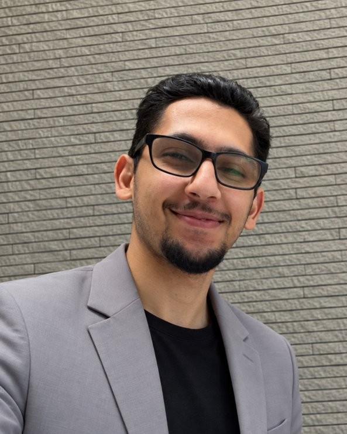

Gravitational-wave astronomy and cosmology. I detect compact binary mergers in LIGO-Virgo-KAGRA data and I am now turning those detections into measurements of the expansion history of the Universe.
Research Center for the Early Universe (RESCEU), The University of Tokyo
Cannon group · LIGO-Virgo-KAGRA Collaboration

Compact binary coalescences are standard sirens: their gravitational-wave signal encodes the luminosity distance directly. My work covers the full chain, from finding the signal in noisy data to using the resulting population for cosmology.
I completed my Ph.D. at IP2I Lyon (Université Claude Bernard Lyon 1) under the supervision of Viola Sordini, and I am now joining RESCEU at The University of Tokyo, in the group of Kipp Cannon, to develop novel methods for gravitational-wave cosmology.
At RESCEU I will work on novel statistical methods to infer cosmological parameters from compact binary populations, accounting for selection effects and the properties of the detection pipelines. This builds directly on my earlier study of the cosmological implications of LIGO-Virgo observations and the prospects for next-generation detectors (Einstein Telescope, LISA).
I was lead analyst of the offline MBTA search in the first part of the fourth observing run (O4a). My thesis covers the search sensitivity, the background estimation, and the integration of iDQ data-quality information into the ranking. The MBTA results contributed to GWTC-4.0 and to exceptional events such as GW231123, the most massive binary black hole merger observed so far.
I quantify how adding Virgo to the LIGO network improves low-latency sky localization, and how noise transients degrade it. In parallel I contribute to data-quality products and event validation, which determine whether a candidate can be trusted for astrophysics and cosmology.
As a Master's student at CEA Saclay I developed a portable source of thermal neutrons for detector calibration, which contributed to the observation of a nuclear recoil peak at the 100 eV scale.
28 articles to date, 24 of them LVK collaboration papers. The complete list is on INSPIRE-HEP. My individual contributions to each paper are detailed in the annotated publication list.
International Conference on the Physics of the 2 Infinities
Virgo Collaboration Meeting
LIGO-Virgo-KAGRA Collaboration Meeting
International Conference “Exploring the Dark Side of the Universe: Tools”
LIGO-Virgo-KAGRA Collaboration Meeting
LIGO-Virgo-KAGRA Collaboration Meeting
Virgo Collaboration Meeting
Seminar, CEA Institute of Research into the Fundamental Laws of the Universe (IRFU)
Teaching assistant at Université Claude Bernard Lyon 1 (Faculty of Sciences and Technology) throughout my Ph.D., from 2023 to 2025, in three undergraduate courses covering electromagnetism, general physics and scientific programming.
PythonC/C++RSQLBashGit, CI/CDSLURMHTCondorDockerKubernetesNumPypandasscikit-learnPyTorch
Languages: Berber (native), Arabic, French, English (fluent).